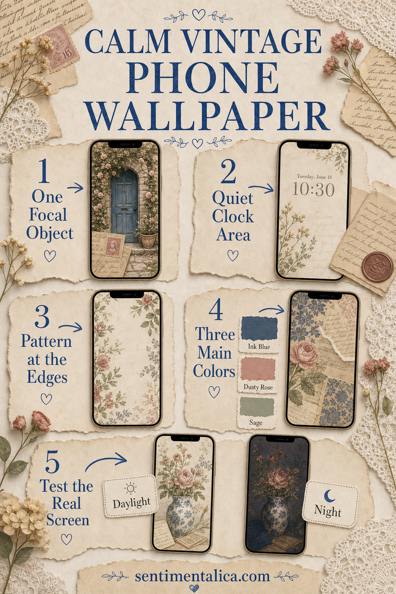
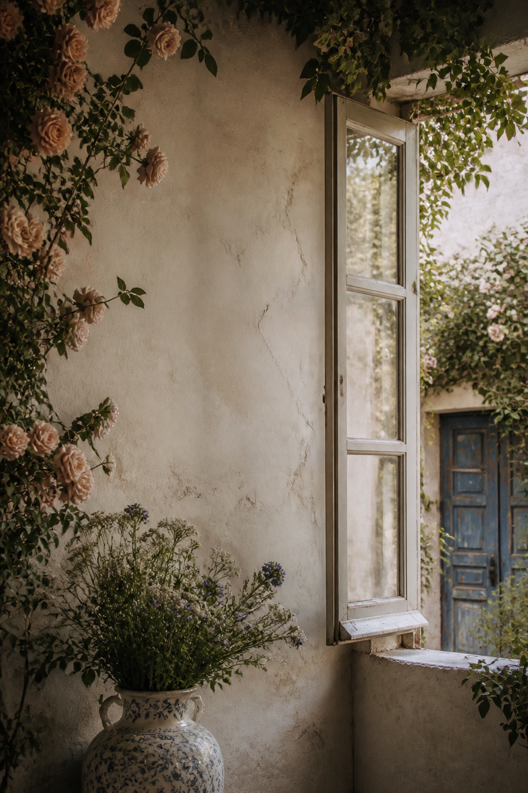

Vintage wallpaper can become visually noisy very quickly. Florals, handwriting, stamps, lace, frames, and antique objects may all be beautiful, but a phone screen still needs to show the time, notifications, icons, and controls.
The best choice is not necessarily the plainest image. It is the one with a clear hierarchy: one thing to notice, one quiet zone for information, and pattern that supports rather than competes.

Choose one focal object
Look for a single visual anchor such as an old doorway, vase, letter, cameo, window, or botanical specimen. It should be larger or higher-contrast than surrounding details.
If five antique objects appear at equal scale, your app icons will become a sixth competing layer. Choose a crop that lets one object lead.
Protect the clock area
The top quarter works best with faded paper, sky, soft wall color, or a broad shadow. Avoid handwriting, faces, and high-contrast floral centers directly behind the time.
Test both pale and dark clock styles if your phone allows it. A warm cream background may be more readable than a heavily distressed brown texture.

Keep pattern near the edges
Wallpaper pattern can frame the screen beautifully when it stays at the sides or lower corners. A lace edge, faded botanical border, or small stamp cluster adds character without sitting beneath every control.
All-over tiny pattern is harder to use because every icon lands on a different contrast. Choose larger motifs with breathing room between them.
Limit the color story
Three dominant colors are usually enough: a paper neutral, a dark anchor, and one aged accent. Cream, ink blue, and dusty rose feel collected; walnut, parchment, and faded green feel archival.
Muted does not need to mean muddy. Keep one clean light area so the whole screen does not become brown-gray.
Test the real screen before deciding
- Duplicate the image and try two crops.
- Check the clock and notification text.
- Open the home screen and inspect icon labels.
- View it in daylight and at night.
- Keep the version that remains calm after a full day.
A useful vintage wallpaper should feel collected, not crowded.
If you love an image that is too detailed, save it for a lock screen with fewer controls and choose a quieter companion for the home screen. The two can share a palette without repeating the same composition.
Browse more wallpaper composition ideas in the Sentimentalica journal.